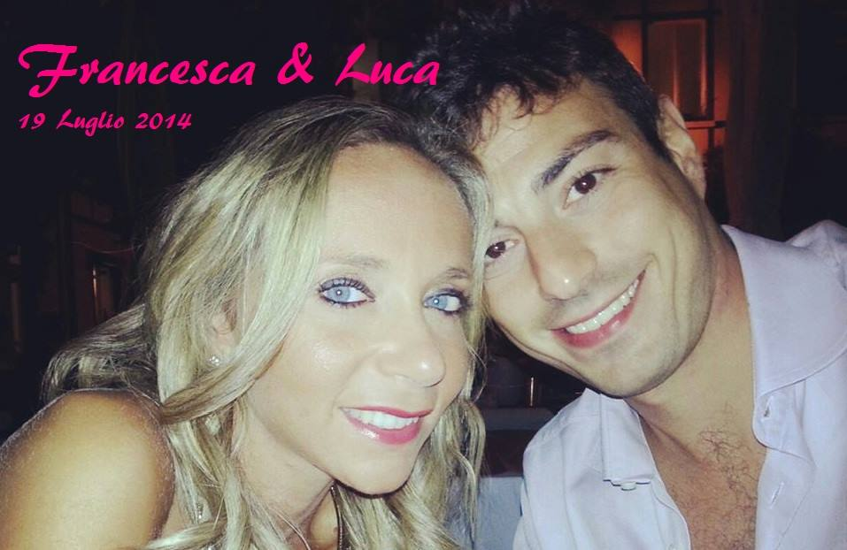
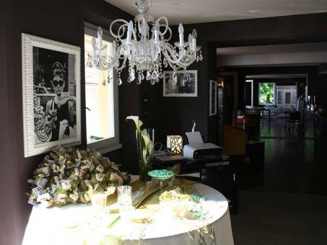

sabato, ore 16:00
19 luglio 2014
Giorni
Ore
Minuti
Secondi

Chiesa
Chiesa dei Santi Nazaro e CelsoPiazza San Giorgio
Bellano (LC)
Come arrivare al parcheggio
Da Milano (circa 80 km)
- Percorso 1: se avete fretta perché siete in ritardo!
- Percorso 2: seguite la SS36 fino all'uscita "Abbadia Lariana", uscite e poi godetevi la splendida vista del percorso panoramico (consigliatissimo!)
E ve lo devo anche spiegare?!
- Arrivate a Bellano, seguite il lungo lago, dopo il porticciolo ci sono ampi parcheggi sulla destra e sulla sinistra.

Via imbarcadero, 3 - 23827 Lierna Lecco
Aperitivo, Wedding Dinner e Open Bar Night Party
Come raggiungerci
Dalla Chiesa
Ristorante
Ristorante SottoventoVia imbarcadero, 3 - 23827 Lierna Lecco
Aperitivo, Wedding Dinner e Open Bar Night Party
Come raggiungerci
Dalla Chiesa
- seguite il lungolago in direzione Lecco e dopo circa 10km arrivate a Lierna. Parcheggiate e raggiungete il Ristorante a piedi.
Il Tuo regalo agli Sposi
Ed ora... un po' di fotografie
Instagram #wday19luglio2014
Facebook #wday19luglio2014
Un tocco "social"